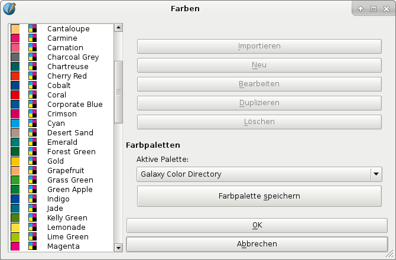

Galaxy Gauge™ hat sich auf professionelle Instrumente für Graphik-Designer spezialisiert, unter anderem auch für wissenschaftliche Veröffentlichungen. Der Sitz ist in Colorado (USA) und die Hauptmärkte sind Nordamerika, Großbritannien, Irland und Ozeanien (Australien und Neuseeland).
Die Galaxy-Farbpaletten in Scribus entsprechen dem Farbübereinstimmungs- und Prognosesystem von Galaxy Gauge. Ein vermutlich einzigartiges Merkmal dieses Systems ist die leichte Abstimmung zwischen Designer und Kunde. Während man bei anderen Systemen teure Farbbücher, -tafeln oder -karten kaufen muß, kann hier der Designer gedruckte Referenzen zu moderaten Preisen kaufen und sie via Email verteilen, so daß schon bei der Entscheidung über das Design beide Seiten die gedruckten Farben sehen können. Dank der Aufnahme des Galaxy-Gauge-Systems in Scribus können die Benutzer schnell Entscheidungen aus der analogen Welt in digitale Dokumente übertragen.
Galaxy Color Map™ Pro Main: Diese CMYK-Farben entsprechen der Hauptpalette des Galaxy-Color-Map-Pro-Tools. Durch eine Steigerung um 20% jeder CMYK-Komponente ergibt sich ein größerer Farbbereich als bei jeder anderen Galaxy-Farbpalette. Eine Pastell-Palette erhöht die Komponenten in Schritten zu 5% und bietet so feine Abstufungen für sanfte CMYK-Farben. Die gedruckte Referenz »Color Map Pro« ist für gestrichenes und ungestrichenes Papier erhältlich.
Anzahl der Farben: 1,287
Galaxy Color Directory: Diese Palette entspricht dem »Galaxy Color Directory«, das in Color Map Pro and Color Zil enthalten ist. Sie enthält mehr als 70 mit Namen benannten Farben, was bei Kundengesprächen und bei Projekten, bei denen die Farben eher mit Namen als Prozentwerten bezeichnet werden, nützlich ist.
Anzahl der Farben: 79
|  |
Galaxy Color Harmonizer™: Diese CMYK-Farben entsprechen dem Galaxy-Color-Harmonizer-Farbrad des Galaxy-Color-Map-Pro-Tools, mit dem man einfach wissenschaftlich designte und Farbraum-kalibrierte ansprechende Farbkombinationen zusammenstellen kann.
Anzahl der Farben: 167
Galaxy Neutrals and Rich Blacks: Diese CMYK-Farben entsprechen dem »Galaxy neutral and rich black color«-Prognose-Tool.
Anzahl der Farben: 48
Galaxy Emotional Color Tool™: Diese CMYK-Farben entsprechen dem Galaxy-Color-Mix-and-Emotions-Tool der Galaxy-Color-Map-Pro- und Color-Zil-Tools. Mit ihnen kann man emotionale Effekte durch spezifische Farb- und Ton-Kombinationen erzielen.
Anzahl der Farben: 71
Galaxy Visible Color Spectrum: Dies sind die CMYK-Äquivalente der sichtbaren natürlichen Farben der einzelnen, nicht gemischten Lichtwellenlängen. Kombiniert ergeben die Farben Weiß, mit gezielt gewählten Kombinationen alle sichtbaren Farben. Die Farben korrelieren mit den Wellenlängen in Nanometer, sie können mit Online-Konvertern, Galaxy Color Zil oder dem Specura-Tool in Frequenzen, Energie (in Joule) oder Elektronenvolt umgerechnet werden.
Anzahl der Farben: 12
Galaxy Blackbody Spectrum: Wenn ein Objekt erhitzt wird und sich seine Temperatur erhöht, wechselt seine Farbe durch das Blackbody-Spektrum. Die Temperatur eines Sterns, erhitzten Metalls oder eines anderen Objekts kann ungefähr durch seine Farbe im Blackbody-Spektrum festgestellt werden. Die Temperaturen sind in Kelvin, können aber in Fahrenheit oder Celsius umgerechnet werden.
Anzahl der Farben: 16
Galaxy Pocket Color™ Map: Diese Palette entspricht den Farben der Galaxy-Pocket-Map.
Anzahl der Farben: 168
Galaxy Color Zil™ Main: Diese Farbpalette erhöht stufenweise jede Farbe des CMYK-Farbmodells um 25%. Es gibt auch eine Pastell-Palette mit Stufen von 10% für sanfte Farben. Die Palette entspricht dem Galaxy-Color-Zil-Tool.
Anzahl der Farben: 625
Zusätzlich zu den professionellen Hilfsmitteln wie gedruckten Farbreferenzen bietet Galaxy Gauge für Scribus-Nutzer einige interessante Gratis-Downloads, darunter einen Farbkalibrierungs-Leitfaden (PDF), Dateien für die Hardware-Kalibrierung und einen CMYK-Farbbalken (EPS), der als Alternative zum Kalibrierungsbalken in Scribus genutzt werden kann.